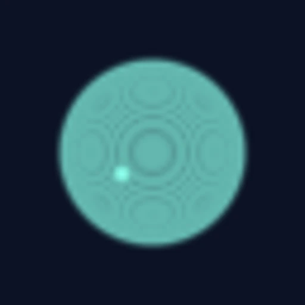
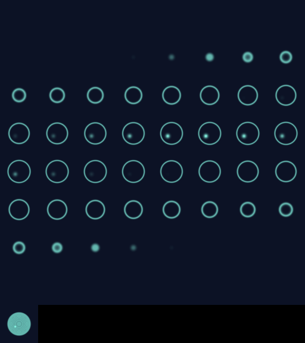

01 Scientific software · Immersive imaging
Fiji VR
A Fiji plugin for examining the 3D structure and time evolution of microscopy samples in a browser or on a compatible VR headset.
Motivation
See what lies between slices
Stepping through a microscopy stack makes it hard to see how structures connect in depth. I built Fiji VR to let researchers move between an individual source plane and a view of the whole volume from the same Fiji image.
Implementation
Keep the original pixels
The plugin reads Fiji’s channel, depth, and time axes and streams native-resolution image blocks to a browser viewer. You can rotate the volume, inspect source planes, and play time series. The immersive viewer is a prototype and headset testing is pending.
Interactive figure
One stack, two views
Scrub through the source planes to find the shell and the off-center core. Then switch to maximum intensity to see what happens when the brightest signal along each depth column is projected onto a single image.


Synthetic shell
64 × 64 × 64 voxels from the Fiji VR demo.
Inside the viewer